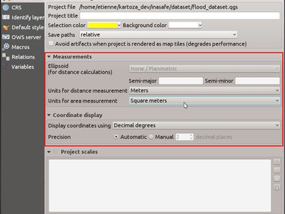
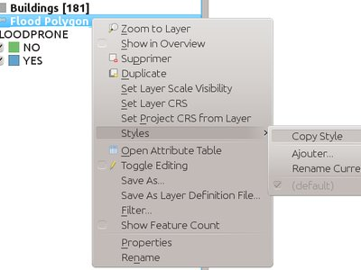
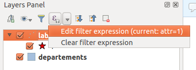

Jurnalul schimbărilor pentru QGIS 2.14¶

Acesta este jurnalul schimbărilor pentru următoarea versiune de QGIS - versiunea 2.14 «Essen». Essen a fost orașul gazdă al întâlnirilor dezvoltatorilor din Octombrie 2012 și 2014.
Versiunea cu Suport pe Termen Lung
Aceasta este o versiune specială, deoarece este desemnată ca fiind «LTR» (Versiune cu Suport pe Termen Lung). Versiunilor LTR li se vor depana erorile timp de un an, și vor avea în permanență funcționalitățile înghețate (adică, nu se vor adăuga noi caracteristici, doar se vor repara erorile și se vor efectua actualizări triviale). Rețineți că se află în discuție lansarea versiunilor LTR o dată la doi ani, dar, din motive tehnice, nu vom face acest lucru până la apariția QGIS 3.2.
Scopul versiunilor LTR este de a oferi o platformă stabilă și mai puțin supusă schimbărilor, pentru întreprinderi și organizații care nu doresc să se ocupe cu reactualizarea competențelor utilizatorilor, a materialelor de instruire etc., mai mult de o dată pe an. Succesul versiunilor LTR ține de voi, utilizatorii noștri dragi - avem nevoie de sprijinul vostru pentru a ajuta la finanțarea reparării erorilor, asigurându-vă, totodată, prin contractele de asistență cu furnizorii de suport tehnic, că toate erorile reparate în numele dumneavoastră vor fi aplicate atât versiunii LTR cât și celei obișnuite.
De asemenea, în cazul în care o versiune LTR este importantă pentru dvs., vă rugăm să luați în considerare susținerea în mod direct a proiectului QGIS, sau să propuneți furnizorului dumneavoastră comercial utilizarea LTR ca bază pentru soluțiile de întreprindere, astfel încât oricine să poată beneficia de o platformă stabilă, îmbunătățită și finisată în permanență. Rețineți că pentru utilizatorii și organizațiile cărora le plac lucrurile împinse la limită, elaborarea unei noi versiuni, o dată la patru luni, va continua neabătut.
Noi Funcționalități în QGIS 2.14 «Essen»
Dacă efectuați o actualizare a QGIS 2.8 (versiunea LTR anterioară) veți descoperi un număr mare de caracteristici noi. Vă încurajăm să citiți jurnalele schimbărilor pentru versiunile de bază non LTR 2.10 și 2.12, versiunea QGIS 2.14 incluzând, de asemenea, toate funcționalitățile respective. Rețineți că 2.14 va apărea mai întâi în depozitele de pachete regulate, și nu va înlocui imediat 2.8 în depozitele pachetelor LTR. Acest lucru se va întâmpla în urma lansării versiunii 2.16.
Ori de câte ori se adaugă noi caracteristici în aplicație, apare posibilitatea introducerii unor noi erori - dacă întâmpinați probleme cu această versiune, vă rugăm să semnalați acest lucru în Sistemul de urmărire a erorilor QGIS.
Mulțumiri
We would like to thank the developers, documenters, testers and all the many folks out there who volunteer their time and effort (or fund people to do so). From the QGIS community we hope you enjoy this release! If you wish to donate time, money or otherwise get involved in making QGIS more awesome, please wander along to qgis.org and lend a hand!
QGIS is supported by donors and sponsors. A current list of donors who have made financial contributions large and small to the project can be seen on our donors list. If you would like to become an official project sponsor, please visit our sponsorship page for details. Sponsoring QGIS helps us to fund our six-monthly developer meetings, maintain project infrastructure and fund bug fixing efforts. A complete list of current sponsors is provided below - our very great thank you to all of our sponsors!
QGIS este un soft gratuit iar dvs. nu aveți obligația de a plăti pentru folosirea lui - de fapt, vrem să încurajăm oamenii de oriunde să-l folosească, indiferent de starea financiară sau socială - având convingerea că, prin punerea la dispoziția utilizatorilor a posibilităților de decizie spațială, vom ajunge la o societate mai potrivită întregii omeniri. Dacă aveți posibilitatea de a sprijini QGIS, puteți 
- Sponsori Actuali ai QGIS
- Generalități
- Caracteristică: Comportament schimbat al funcției strpos
- Caracteristică: Transfocare la nivelul entității, cu ajutorul unui clic dreapta în tabelul de atribute
- Caracteristică: Îmbunătățiri aduse vitezei și memoriei
- Caracteristică: Mai multe variabile în cadrul expresiilor
- Caracteristică: Mai mult control asupra plasamentului elementelor de hartă
- Caracteristică: Program de plată pentru eliminarea erorilor
- Caracteristică: Calculatorul de câmpuri poate fi folosit pentru a actualiza geometria entității
- Caracteristică: Noi funcții pentru expresii în 2.14
- Instrumentele de analiză
- Caracteristică: Mai multe statistici disponibile în instrumentul de îmbinare a atributelor
- Caracteristică: Valorile z/m sunt afișate atunci când se utilizează instrumentul de identificare
- Caracteristică: Manipulare centralizată a unităților de distanță și de suprafață, și a formatelor pentru coordonate
- Navigatorul
- Furnizorii de Date
- Caracteristică: Capabilităţi de păstrare în memoria tampon a cererilor WMS
- Caracteristică: S-a extins suportul pentru geometria curbată
- Caracteristică: Gestiune îmbunătățită pentru câmpurile de tipurile time și datetime
- Caracteristică: Suport Z/M în furnizorul de text delimitat
- Caracteristică: Grupuri de tranzacții pentru editarea Postgres:
- Caracteristică: Autentificare PKI pentru furnizorul Postgres
- Caracteristică: Straturi virtuale
- Caracteristică: Mai multe extensii de fișiere pentru furnizorii selectorilor de fișiere GDAL și OGR
- Caracteristică: Utilizarea ST_RemoveRepeatedPoints pentru simplificarea, pe parte de server, a straturilor PostGIS 2.2 (sau mai noi)
- Gestiunea datelor
- Caracteristică: Eliminarea plugin-ului SPIT
- Caracteristică: Exportul DXF: opțiunea de a utiliza titlul în loc de nume, ca denumire a stratului DXF în aplicație și server
- Caracteristică: Tipul de geometrie poate fi suprascris în dialogul de salvare a vectorului
- Caracteristică: Joncțiunile vectoriale sunt de acum salvate în interiorul fișierului QLR, cu definițiile stratului
- Caracteristică: Controlul grafic al Resurselor Externe
- Caracteristică: Editarea relației N:M
- Digitizarea
- Etichetarea
- Caracteristică: Mod de poziționare „cartografică” pentru etichetele punctelor
- Caracteristică: Aplicarea distanței etichetei față de limitele simbolurilor
- Caracteristică: Controlul ordinii de randare a etichetelor
- Caracteristică: Simbolulul de randare actual este de acum considerat drept un obstacol pentru etichetele entităților de tip punct
- Legenda Stratului
- Compozitorul de Hărți
- Plugin-uri
- Procesare
- Caracteristică: Noi algoritmi în 2.14
- Caracteristică: Asigurarea Calității pentru Testele de Unitate
- Caracteristică: Îmbunătățiri aduse barei de instrumente
- Caracteristică: Procesarea loturilor se poate salva, deschizându-se, ulterior, cu ajutorul interfeței de prelucrare a loturilor
- Caracteristică: Dialogul algoritmilor conține mai multe informații
- Caracteristică: Module v.net GRASS7
- Programabilitatea
- Caracteristică: S-a reproiectat editorul de expresii
- Caracteristică: Stocarea în proiect a codului init Python
- Caracteristică: Noi opțiuni de sortare și filtrare pentru QgsFeatureRequest
- Caracteristică: Opțiuni pentru codul Python din formularele personalizabile
- Caracteristică: Noi clase PyQGIS în 2.14
- Noi clase de baze
- Noi clase GUI
- Serverul QGIS
- Caracteristică: Parametrul STARTINDEX în cererea WMS GetFeature
- Caracteristică: showFeatureCount în GetLegendGraphic
- Caracteristică: Opțiune de evitare a randării artefactelor, la marginile plăcuțelor
- Caracteristică: Verificator de configurare, în Proprietățile Proiectului
- Caracteristică: Capabilităţi WMS INSPIRE
- Caracteristică: Adăugarea unor nume scurte pentru straturi, grupuri și proiecte
- Simbologie
- Caracteristică: Asistent pentru ajustarea lățimii liniei
- Caracteristică: Suport pentru transparență în parametrii de culoare SVG
- Caracteristică: Duplicarea facilă a straturilor pentru simboluri
- Caracteristică: Render 2.5D
- Caracteristică: Este permisă definirea ordinii de randare a entităților
- Caracteristică: Simboluri pentru generatorul de geometrie
- Exemple
- Interfața cu Utilizatorul
- Caracteristică: Tabela de atribute poate fi actualizată
- Caracteristică: Setarea directă a renderului și a clasei de culori pentru simbol, din meniul contextual al legendei,
- Caracteristică: Editarea simbolurilor legendei direct din arborele straturilor
- Caracteristică: Afișarea/ascunderea tuturor elementelor din legendă, prin intermediul meniului contextual
Sponsori Actuali ai QGIS¶
  Oficiul Lucrărilor Publice, Irlanda, Irlanda (12.2014-12.2016) Oficiul Lucrărilor Publice, Irlanda, Irlanda (12.2014-12.2016) |
 G.A.I.A. mbH, Germania (11.2015-11.2016) G.A.I.A. mbH, Germania (11.2015-11.2016) |
 Sourcepole AG, Elveția (10.2014-10.2016) Sourcepole AG, Elveția (10.2014-10.2016) |
 Universitatea de Știință și Tehnologie AGH, Polonia (06.2015-06.2016) Universitatea de Știință și Tehnologie AGH, Polonia (06.2015-06.2016) |
 Statul Vorarlberg, Austria (03.2013-05.2016) Statul Vorarlberg, Austria (03.2013-05.2016) |
Asociația Geoinnova, Spania (03.2016-03-2017) |
GIS3W, Italia (01.2014-01.2017) |
GKG Kassel,(Dr.-Ing. Claas Leiner), Germania (03.2014-03.2017) |
Managementul Resurselor din CawdorForestry, Scoția (02.2016-02.2017) |
ChameleonJohn, SUS (02.2016-02.2017) |
2D3D.GIS, Franța (12.2015-12.2016) |
Dr. Kerth + Lampe Geo-Infometric GmbH, Germania (12.2015-12.2016) |
MappingGIS, Spania (11.2015-11.2016) |
HostingFacts.com, Estonia (12.2015-12.2016) |
Urbsol, Australia (11.2014-11.2016) |
Lutra Consulting, UK (10.2015-10.2016) |
WhereGroup GmbH & Co. KG, Germania (08.2015-08.2016) |
Nicholas Pearson Associates, UK (07.2015-07.2016) |
QGIS Polska, Polonia (07.2015-07.2016) |
www.terrelogiche.com, Italia (06.2015-06.2016) |
www.geosynergy.com.au, Australia (05.2012-05.2013+06.2015-06-2016) |
Gaia3D, Inc., Coreea de Sud (05.2015-05.2016) |
Royal Borough of Windsor and Maidenhead, UK (04.2015-04.2016) |
Chartwell Consultants Ltd., Canada (03.2015-03.2016) |
Trage Wegen vzw, Belgia (03.2015-03.2016) |
GFI - Gesellschaft für Informationstechnologie mbH, Germania (03.2015-03.2016) |
GIS-Support, Polonia (02.2015-02.2016) |
ADLARES GmbH, Germania (01.2015-01.2016) |
www.molitec.it, Italia (01.2014-01.2016) |
www.argusoft.de, Germania (06.2012-06.2013 + 12.2013-12.2015) |
Customer Analytics, SUA (12.2014-12.2015) |


Generalități¶
Caracteristică: Comportament schimbat al funcției strpos¶
Comportamentul funcției strpos a fost modificat, astfel încât nici o potrivire nu va rezulta într-o valoare de „0”, o valoare diferită de zero indicând o potrivire la poziția caracterului specificat. În versiunile QGIS mai vechi, valoarea «-1» specifică o ne-potrivire, iar alte valori returnate reprezintă poziția caracterului - 1.
Fișierele de proiect din versiunile anterioare QGIS vor trebui să fie actualizate, pentru a reflecta această modificare.

Această funcționalitate a fost dezvoltată de Jürgen Fischer
Caracteristică: Transfocare la nivelul entității, cu ajutorul unui clic dreapta în tabelul de atribute¶
De acum, puteți transfoca la nivelulu oricărei entități din cadrul tabelului de atribute (fără a fi nevoie să o selectați mai întâi) făcând clic dreapta și alegând transfocare la nivelul entității.

Caracteristică: Îmbunătățiri aduse vitezei și memoriei¶
- Salvarea unui set de entități selectate dintr-un strat foarte mare, este, de acum, mult mai rapidă
- Actualizarea doar a entităților selectate, folosind calculatorul de câmpuri este mai rapidă
- Transfocare mai rapidă asupra selecțiilor din straturile mari
- Funcția
get_featureeste mult mai rapidă (mai ales atunci când se folosește o coloană indexată din stratul de referință) - Algoritmii de procesare
SelectByAttributeșiExtractByAttributesunt cu câteva ordine de mărime mai rapizi, și pot beneficia de indecșii din bazele de date creați pentru un atribut - Algoritmul de procesare
PointsInPolygoneste cu multe ordine de mărime mai rapid - Filtrarea categoriilor dintr-un render de categorisire (de exemplu, prezentând doar unele categorii și debifându-le pe altele) este mult mai rapidă, deoarece acum doar entitățile potrivite sunt preluate din furnizorul de date
- Reducere semnificativă a memoriei necesară pentru deschiderea straturilor vectoriale de mari dimensiuni
Caracteristică: Mai multe variabile în cadrul expresiilor¶
Pe durata randării, noi variabile vor fi disponibile:
@geometry_part_count: Numărul de părți al geometriei randate în mod curent (util pentru entitățile multi-parte)@geometry_part_num: indexul cu originea 1, al părții de geometrie randată în mod curent
Acestea sunt utile pentru a aplica diferite stiluri diverselor părți ale entităților multiparte:
@map_extent_width: Lățimea hărții randate în mod curent, în unități de hartă@map_extent_height: Înălțimea hărții randate în mod curent, în unități de hartă@map_extent_center: Punctul central al hărții randate în mod curent, în unități de hartă
Au fost, de asemenea, adăugate variabilele referitoare la mediul de operare:
@qgis_os_name: de ex. «Linux»,»Windows» sau «OSX»@qgis_platform: de ex. «Desktop» sau «Server»@user_account_name: numele de cont pentru utilizator curent din sistemul de operare@user_full_name: numele utilizatorului curent din sistemul de operare (dacă este disponibil).

Această facilitate a fost finanțată de Andreas Neumann (variabilele referitoare la sistemul de operare și la utilizator)
Această funcționalitate a fost dezvoltată de Nyall Dawson, Matthias Kuhn
Caracteristică: Mai mult control asupra plasamentului elementelor de hartă¶
QGIS 2.14 a dobândit un control mai bun asupra plasării pe canevas a săgeții nordului, a bării de scară și a notițelor privind drepturile de autor. De acum puteți seta cu precizie poziționarea acestor elemente, folosind diferite unități (inclusiv milimetri, pixeli și procente).

Caracteristică: Program de plată pentru eliminarea erorilor¶
Înainte de fiecare lansare, vom susține un program plătit de eliminare a erorilor, în care vom finanța dezvoltatorii să curețe cât mai multe erori posibil. Am decis să inițiem inclusiv un nou raport cu privire la acest program de eliminare cu plată a defecțiunilor, ca parte a jurnalului schimbărilor. Rețineți că această listă nu este exhaustivă.
- Sandro Santilli: Conexiunea PostGIS se blochează dacă se apasă „Setare filtru” pe durata încărcării datelor
- Sandro Santilli: db_manager este în imposibilitate de a încărca rastere din conexiuni pentru care nu s-a specificat un dbname
- Sandro Santilli: Rotirea nu funcționează corect în straturile plugin-urilor
- Sandro Santilli: Închidere accidentală a aplicației în QgsGeomColumnTypeThread, la oprirea scanării conexiunii #14140 #13806
- Sandro Santilli: Închidere accidentală a aplicației după schimbarea valorii atributului în fișierul shape
- Sandro Santilli: KMZ cauzează închiderea accidentală a aplicației QGIS (Mac)
- Sandro Santilli: QGIS 2.8.1 se închide accidental la deschiderea fișierelor GDB (openGDB-Driver)
- Sandro Santilli: Închidere accidentală a aplicației după eliminarea unui vertex al unei geometrii multiparte
- Sandro Santilli: test -V -R qgis_analyzertest segfaults
- Sandro Santilli: output/bin/qgis_diagramtest segfaults
- Sandro Santilli: Eroare de depășire, în cazul cheilor primare cu valori negative; QGIS se blochează la editare #13958 #14262
- Sandro Santilli: Testul PyQgsPostgresProvider se blochează în absența unei baze de date de testare
- Sandro Santilli: TestVectorLayerJoinBuffer produce o blocare în cazul în care baza de date cu care nu este disponibilă
- Nyall Dawson: BLOCAJ: Închiderea ccidentală la deschiderea dialogului cu proprietățile stratului, pentru straturile fără geometrie
- Nyall Dawson: Filtrarea pe partea de server este nefuncțională pentru straturi OGR, Oracle și Spatialite
- Nyall Dawson: BLOCAJ: Digitizarea defectuoasă a poligoanelor în versiunea master
- Nyall Dawson: BLOCAJ: Hărțile calorice care conțin expresii declanșează o eroare de segmentare
- Nyall Dawson: BLOCAJ: debifarea unui sub-strat de simbologie ordonată pe categorii, conduce la ne-desenarea entităților
- Nyall Dawson: Prioritate ÎNALTĂ: O imagine multibandă (cum ar fi landsat5,7,8) nu poate fi afișată în Windows8
- Nyall Dawson: BLOCAJ: CurvePolygons nu se desenează
- Nyall Dawson: BLOCAJ: Instrumentul „Îmbinare Attribute” nu schimbă valorile atunci când sunt introduse
- Nyall Dawson: Prioritate ÎNALTĂ: Filtrarea legendei după conținut nu se efectuează atunci când renderul conține simboluri duplicate
- Nyall Dawson: S-au remediat probleme care blocau un render, la conversia acestuia în render bazat pe reguli
- Nyall Dawson: S-a remediat un defect care împiedica renderul bazat pe categorii să stocheze modificările aduse simbolului sursei
- Nyall Dawson: Prioritate ÎNALTĂ: S-a remediat închiderea accidentală a aplicației în urma încărcării unor rastere mari, sau a folosirii calculatorului raster
- Nyall Dawson: Prioritate ÎNALTĂ: variabila @value, de umplere cu o culoare simplă a unui simbol, se modifică în mod eronat într-o expresie definită de date
- Nyall Dawson: Prioritate ÎNALTĂ: Editarea legendei Compozitorului nu funcționează pe durata filtrării
- Nyall Dawson: Prioritate NORMALĂ: Ștergerea nodurilor - comportament inconsecvent
- Nyall Dawson: S-a remediat manipularea valorii timpului în atribute
- Nyall Dawson: S-a remediat ordinea filelor dialogului
- Nyall Dawson: BLOCAJ: închidere accidentală a aplicației după adăugarea mai multor fișiere din panoul navigatorului
- Nyall Dawson: Prioritate ÎNALTĂ: Instrumentul de îmbinare a datelor selectate corupe datele atunci când coloanele sunt definite ca fiind „ascunse”
- Nyall Dawson: Acum câmpurile LongLong se interpretează corect în dialogul de îmbinare a atributelor
- Nyall Dawson: S-a remediat afișarea eronată a detaliilor de calcul din dialogul instrumentului de măsurare (era înșelătoare și inexactă pentru multe combinații CRS/unitate)
- Nyall Dawson: Prioritate NORMALĂ: Valoarea maximă pentru opțiunea „crește dimensiunea diagramelor mici» nu este suficientă
- Nyall Dawson: BLOCAJ: Suprafața nu era calculată corect având activată opțiunea OTF
- Nyall Dawson: Prioritate NORMALĂ: Coordonatele lat/lon erau incoerente, într-un proiect aflat într-un sistem de coordonate proiectat
- Nyall Dawson: Prioritate NORMALĂ: Posibilitatea ca în calculatorul de câmpuri să se calculeze suprafețele și lungimile și în alte unități, diferite de cele de hartă `12939 #2402 #4857
- Nyall Dawson: Prioritate NORMALĂ: diferite unelte interne calculau eronat ariile poligoanelor
- Nyall Dawson: Prioritate NORMALĂ: În câmpurile virtuale funcția $area calculează valorile folosind întotdeauna elisoidul «None/planimetric»
- Martin Dobias: desenare defectuoasă a straturilor raster
- Martin Dobias: Prioritate ÎNALTĂ: Probleme de randare multifilară și probleme de reproiectare OTF `#11441 #11746
- Martin Dobias: BLOCAJ: Regresie în dialogul de „salvare ca” pentru fișierele shape
- Martin Dobias: În modul de depanare încărcarea tabelului de atribute are loc lent
- Martin Dobias: BLOCAJ: Închidere accidentală a aplicației la schimbarea tipului de render
- Martin Dobias: Prioritate ÎNALTĂ: Probleme particulare ale renderului Python #1
- Martin Dobias: Prioritate ÎNALTĂ: Probleme particulare ale renderului Python #2
- Martin Dobias: S-au adus corecții la renderul 2.5d
- Martin Dobias: Prioritate ÎNALTĂ: Blocare pe termen lung la inițializarea acroșării
- Martin Dobias: Prioritate NORMALĂ: Încărcarea definițiilor de date din xml
- Martin Dobias: Corecții aduse la DB Manager, pentru a putea lucra cu SpatiaLite < 4.2
- Martin Dobias: Prioritate NORMALĂ: Închidere accidentală a aplicației în modul de depanare
- Martin Dobias: BLOCAJ: Remediere selecție / identificare în vederile spatialite `14232 #14233
- Martin Dobias: BLOCAJ: Remediere drag&drop în tabelele spatialite
- Jürgen Fischer:Transfocarea la nivelul stratului lucreaza incorect pe durata editării stratului
- Jürgen Fischer:Ajutor proces de vizualizare care rulează în fundal, fără nici un ajutor de vizualizare (sau chiar QGIS) deschis
- Jürgen Fischer:Calea către fișierul de includere a indexului spațial lipsește din unele componente
- Jürgen Fischer:Compilarea are loc în mod eronat, la încercarea de generare a fișierului qgsversion.h
- Jürgen Fischer:Configurarea controlului grafic de editare este stocată de două ori
- Jürgen Fischer:Extra spațiul din operatorul „IS NOT” face ca expresia să returneze o selecție eronată
- Jürgen Fischer:QGIS face economie de memorie, și se blochează la editarea cu ajutorul instrumentului nod a fișierelor shape de dimensiuni moderate
- Jürgen Fischer:Reproiectarea franceză folosește ntf_r93.gsb (IGNF:LAMBE etc ..)
- Jürgen Fischer:Digitizare: „Refolosirea ultimelor valori de atribute introduse” nu ar trebui să suprascrie coloana cheii primare
- Jürgen Fischer:Probleme în descrierea instrucțiunii Case
- Jürgen Fischer:scrierea fișierului shape vectorial: salvarea ca și dată a unui câmp datetime are ca rezultat pierdererea valorilor pentru oră
- Jürgen Fischer:S-a adăugat ajutorul pentru anumite funcții variabile
- Jürgen Fischer:Straturile virtuale nu funcționează în Processing
- Jürgen Fischer:Fișierul cu definiții pentru strat se încarcă în mod eronat
- Jürgen Fischer:QgsGeometry::fromWkb eșuează dacă WKB are o reprezentare endiană diferită
- Jürgen Fischer:Compilare eronată pentru Debian.
- Jürgen Fischer:Testul PyQgsPostgresProvider eșuează în absența unei baze de date de testare
- Jürgen Fischer:Acces WKB în afara limitelor
- Jürgen Fischer:QGIS sub Windows NetCDF importă invers axa Y, în timp ce Linux nu face acest lucru OSGeo4W #483
- Jürgen Fischer:OSGEO4W: Programul independent de instalare se blochează în timpul rulării
- Jürgen Fischer:OSGEO4W: Dependențele nu sunt înregistrate pentru Windows Server 2003 x64
- Jürgen Fischer:OSGEO4W: instalarea din pachetul local nu verifică dependențele
- Jürgen Fischer:OSGEO4W: Instalarea începe descărcarea și instalarea pachetelor mai înainte de afișarea unei liste de selecție
- Jürgen Fischer:OSGEO4W: Parametrul -a pentru modul Avansat selectează două opțiuni (linia de comandă a instalării)
- Jürgen Fischer:OSGEO4W: Pe durata instalării szip se descărca la infinit licența de utilizare
- Jürgen Fischer: Trimitere eronată către furnizorul Oracle
- Jürgen Fischer: s-a remediat setarea căii SAGA
Caracteristică: Calculatorul de câmpuri poate fi folosit pentru a actualiza geometria entității¶
Calculatorul de câmpuri poate fi utilizat de acum pentru a actualiza o geometrie a unei entități utilizând rezultatul unei expresii geometrice. Aceasta este o comandă rapidă, la îndemână, pentru a face operații de genul aplicării unui tampon unui grup de entități selectate, care, alături de toate funcțiile specifice geometriilor, nou adăugate în 2.14, facilitează manipularea geometriilor dvs.!

Această funcționalitate a fost dezvoltată de: Nyall Dawson
Caracteristică: Noi funcții pentru expresii în 2.14¶
În versiunea 2.14 au fost adăugate multe funcții noi, specifice expresiilor:
relate: realizează relații cu geometrii DE-9IM, fie prin returnarea reprezentării DE-9IM a relației dintre două geometrii, fie prin testarea potrivirii unei relații DE-9IM cu un model specificat.- funcția
make_pointacceptă de acum valorile opționale z și m, iar o nouă funcțiemake_point_ma fost adăugată pentru crearea geometriilor PointM. - funcțiile
mșizpentru recuperarea valorilor m și z dintr-o geometrie de tip punct - funcțiile
make_lineșimake_polygon, pentru crearea geometriilor de tip linie sau poligon pornind de la un set de puncte reverse, pentru scrierea inversă a șirurilor de liniieval, care poate evalua expresia pe care o reprezintă șirul de caracteretranslate, pentru deplasarea geometriilor în sensul axelor x/y, pe o anumită distanțădarkerșilighter, care preiau ca argument o culoare și o fac mai inchisă sau mai deschisă, în funcție de valoarea specificatăradianișigrade: pentru conversia unghiurilor în radiani sau gradepoint_on_surface: returnează un punct care se situează pe suprafața unei geometriiexterior_ring: returnează inelul exterior pentru o geometrie de tip poligonis_closed: returnează true dacă un șir de linii este închis- noi funcții accesor pentru geometrie:
geometry_n(returnează o geometrie specifică din cadrul unei colecții),interior_ring_n(returnează un inel interior dintr-un poligon) num_geometries: returnează numărul de geometrii din interiorul unei colecțiinum_rings: returnează numărul de inele dintr-un obiect de geometrie poligonalănum_interior_rings: returnează numărul de inele interioare dintr-un poligonnodes_to_points, pentru conversia fiecărui nod dintr-o geometrie într-o geometrie de tip multipunctsegments_to_lines, pentru conversia fiecărui segment dintr-o geometrie într-o geometrie de tip multilinieclosest_point: returnează cel mai apropiat punct al unei geometrii față de o altashortest_line: returnează cea mai scurtă linie posibilă care unește două geometrii
nodes_to_points și segments_to_lines sunt destinate folosirii cu generatorul de simbolistică pentru geometrii, permițând, de exemplu, utilizarea valorilor m și z pentru noduri/linii cu simbologie definită cu ajutorul datelor.
Alte îmbunătățiri:
- geometriile și entitățile pot fi folosite de acum în funcții condiționale. De exemplu, acest lucru permite expresii de genul
case when $geometry then ... else ...șicase when get_feature(...) then ... else ...

Instrumentele de analiză¶
Caracteristică: Mai multe statistici disponibile în instrumentul de îmbinare a atributelor¶
Atunci când se utilizează îmbinarea valorilor atributului sau instrumentul de îmbinare a entităților, sunt disponibile sumare cu statistici, care se pot utiliza la stabilirea valorilor pentru atributele rezultate. Printre altele, sunt incluse cuartilele Q1 și Q3, intervalele intercuartile, valorile majorității și minoritții precum și numărul de valori unice.

Această funcționalitate a fost dezvoltată de: Nyall Dawson
Caracteristică: Valorile z/m sunt afișate atunci când se utilizează instrumentul de identificare¶
Instrumentul de identificare este de acum capabil să arate orice valoare z sau m prezentă în entitățile identificate. În cazul în care entitatea este de tip linie sau poligon, instrumentul va afișa numărul vertecșilor și coordonatele x/y/z/m pentru cel mai apropiat vertex față de punctul identificat. De acum, instrumentul de identificare arată, de asemenea, numărul de părți și numărul de identificare al fiecărei părți, în cazul colecțiilor.

Această funcționalitate a fost dezvoltată de: Nyall Dawson
Caracteristică: Manipulare centralizată a unităților de distanță și de suprafață, și a formatelor pentru coordonate¶
În QGIS 2.14 manipularea diferitelor opțiuni referitoare la unitățile de distanță, de suprafață și de afișare a coordonatelor au fost unificate, simplificate, fiind grupate în Proprietățile Proiectului. Această modificare aduce numeroase avantaje, printre care:
- Formatul pentru coordonate, specificat în Proprietățile Proiectului, este utilizat de fiecare dată când o coordonată este afișată utilizatorului, inclusiv la prezentarea rezultatelor instrumentului de identificare și la afișarea în bara de stare.
- Unitățile de distanță și de suprafață stabilite în Proprietățile Proiectului sunt respectate pentru toate calculele de distanță și suprafață, inclusiv de instrumentul de măsură, de cel de identificare a rezultatelor, și de funcțiile
$area,$lengthand$perimeter. - Au fost adăugate unități suplimentare pentru arii, incluzând yarzi pătrați, acri, hectare și multe altele.
- instrumentul de măsurare a unghiului i s-au adăugat unități unghiulare suplimentare, inclusiv rotații, minute de arc și secunde de arc.
- De acum este posibilă afișarea coordonatelor în latitudine și longitudine în bara de stare, chiar și atunci când se utilizează un CRS proiectat.

Această facilitate a fost finanțată prin programul de eliminare a erorilor, sponsorizat de QGIS
Această funcționalitate a fost dezvoltată de: Nyall Dawson
Navigatorul¶
Caracteristică: Îmbunătățiri aduse Navigatorului¶
Navigatorul QGIS constă într-un sistem de fișiere, în Servicii Web OGC și conexiuni de date, care vă permit să trageți cu ușurință orice strat din sursele menționate mai sus, iar apoi să-l fixați în canevasul hărții (sau în fereastra DB Manager). În această versiune s-au adus două noi îmbunătățiri utile:
- Căile pot fi ascunse în mod selectiv, utilizând panoul navigatorului - acest lucru este util pentru curățarea listei cu surse, și să vă concentrați doar pe directoarele relevante.
- Încărcarea proiectelor direct din navigator - acum aveți posibilitatea să glisați și să eliberați un întreg proiect în canevasul hărții QGIS, iar acesta va fi încărcat.

Această funcționalitate a fost dezvoltată de Nathan Woodrow
Furnizorii de Date¶
Caracteristică: Capabilităţi de păstrare în memoria tampon a cererilor WMS¶
De acum, QGIS va păstra în memoria tampon cererile GetCapabilities WMS, astfel încât, ulterior, cererilor similare li se va răspunde mai rapid. În mod implicit, perioada de stocare în memoria tampon este de 24 de ore, dar puteți ajusta această valoare prin internmediul dialogul Setărilor QGIS.

Această funcționalitate a fost dezvoltată de Jürgen Fischer
Caracteristică: S-a extins suportul pentru geometria curbată¶
Furnizorul de text delimitat acceptă de acum șirurile de caractere WKT curbe, iar furnizorul de memorie (cum ar fi, straturile „temporare, stocate în memorie”) au primit suport complet pentru geometriile curbe. În plus, în cazul în care QGIS a fost compilat cu ajutorul versiunilor GDAL 2.0 sau mai mari, atunci QGIS va accepta pe deplin geometriile curbe din tipurile de fișiere suportate (cum ar fi, de exemplu, fișierele GML).

Această funcționalitate a fost dezvoltată de: Nyall Dawson
Caracteristică: Gestiune îmbunătățită pentru câmpurile de tipurile time și datetime¶
QGIS 2.14 dispune de o manipulare îmbunătățită a câmpurilor de tipurile time și datetime, iar în plus:
- Câmpurile de tip amprentă temporală din PostgreSQL sunt manipulate corect
- Motorul de expresii are de acum suport complet pentru câmpurile de tipul time
- Generatorul de expresii oferă de acum previzualizarea rezultatelor calculului pentru dată, oră și intervale de ore sau date
- Câmpurile time sunt pe deplin acceptate de straturile fișierelor vectoriale (în funcție de formatul de fișier), PostgreSQL, MS SQL Server și de straturile temporare stocate în memorie
- La salvarea straturilor în fișiere vectoriale se va păstra tipurile time din câmpuri, dacă acest lucru este acceptat de formatul stratului vectorial (de exemplu, fișiere MapInfo, cu extensia .tab)

Această funcționalitate a fost dezvoltată de Jürgen Fischer, Nyall Dawson
Caracteristică: Suport Z/M în furnizorul de text delimitat¶
Furnizorul de text delimitat dispune de suport pentru șiruri WKT care conțin coordonatele Z și M. De exemplu, puteți reprezenta un punct cu elementele z și m în felul următor : POINT ZM (1 1 5 60).

Această funcționalitate a fost dezvoltată de: Nyall Dawson
Caracteristică: Grupuri de tranzacții pentru editarea Postgres:¶
O nouă opțiune a fost introdusă pentru a permite editarea tranzacțională.
Atunci când această opțiune este activată
- Toate straturile din aceeași bază de date sunt incluse într-un grup de tranzacții
- În cazul în care primul strat al unui grup este pus în modul de editare, toate celelalte straturi sunt, de asemenea, puse automat în modul de editare
- Atunci când un strat este editat, modificările sunt transmise imediat în baza de date, permițând aplicarea imediată a declanșatorilor și a constrângerilor
- În urma modificărilor efectuate asupra unui strat dintr-un grup de tranzacții, se vor salva toate straturile (tranzacție la nivelul bazei de date)
- În urma refacerii modificărilor aduse unui strat dintr-un grup de tranzacții, se vor reface modificările din toate straturile (tranzacție la nivelul bazei de date)
Această funcționalitate este în prezent Experimentală. În caz că identificați unele probleme, vă rugăm să le raportați.
Acest lucru este aplicabil doar bazelor de date Postgres, la acest moment.

Această funcționalitate a fost finanțată de: SIGE
Această funcționalitate a fost dezvoltată de Matthias Kuhn, OPENGIS.ch, pe baza muncii depuse anterior de Sourcepole
Caracteristică: Autentificare PKI pentru furnizorul Postgres¶
Abilitatea de a utiliza Managerul de Autentificare QGIS, introdusă în 2.12, a fost extinsă la furnizorul PostGIS. Acest lucru permite conectarea la Postgres folosind autentificarea de bază sau PKI, cu acreditările stocate în configurația QGIS. Noul furnizor de autentificarea Postgres poate fi utilizat și în DB Manager.

Această funcționalitate a fost finanțată de Boundless Spatial
Această funcționalitate a fost dezvoltată de Luigi Pirelli
Caracteristică: Straturi virtuale¶
Interogările dinamice SQL pot fi acum folosite pentru orice fel de straturi vectoriale pe care le poate încărca QGIS, chiar dacă, în sine, formatul stratului nu are suport pentru interogări SQL!
Un nou tip de strat vectorial denumit „strat virtual” este de acum disponibil în acest scop. Aveți posibilitatea de a crea un strat virtual, prin definirea unei interogări (incluzând suport pentru agregare și joncțiune) din alte straturi, în proiectul dumneavoastră. Stratul rezultat constituie o vizualizare în direct, dinamică, a rezultatului interogării, astfel încât orice modificări aduse straturilor sursă vor fi reflectate instantaneu în stratul virtual!
Dialectul SQL permis este SQLite, cu funcții Spatialite. Expresiile cu funcții QGIS pot fi utilizate, de asemenea, în interogări. Orice fel de straturi vectoriale pot fi accesate în interogare, inclusiv mai multe straturi de la diferiți furnizori de date, în scopul creării de joncțiuni.
Suportul pentru straturile virtuale a fost adăugat și în DB Manager, precum și setului de instrumente din bara de instrumente Processing, în care este disponibil noul instrument «Execuție SQL».

Această funcționalitate a fost finanțată de MEDDE (Ministerul Francez al Dezvoltării Sustenabile)
Această funcționalitate a fost dezvoltată de Hugo Mercier / Oslandia
Caracteristică: Mai multe extensii de fișiere pentru furnizorii selectorilor de fișiere GDAL și OGR¶
Pentru fișierele vectoriale și raster, QGIS se bazează pe biblioteca GDAL/OGR. Aceasta înseamnă că aproape orice format de fișier care poate fi deschis de către GDAL sau OGR, poate fi deschis direct din QGIS. Până în prezent, unele extensii de fișiere nu au fost adăugate în selectorul de fișiere GDAL sau OGR și, drept urmare, există utilizatori care cred că QGIS nu poate deschide sau manipula aceste formate. Pentru a minimiza această problemă, unele extensii noi au fost adăugate în filtrele de selectare a fișierelor GDAL și OGR:
Pentru fișierele vectoriale:
- .thf pentru formatul franțuzesc de cadastru EDIGEO
- .ods pentru formatul Foilor de calcul de tip Open Document LibreOffice
- .xls pentru formatul MS Excel
- .xlsx pentru formatul Microsoft Excel OpenXML
- .xml pentru formatul NAS - ALKIS
- .map pentru formatul WAsP
- .pix pentru formatul PCIDSK
- .gtm și .gtz pentru formatul GPSTrackMaker
- .vfk pentru formatul VFK
- .osm și .pbf pentru formatul OpenStreetMap
- .sua pentru formatul SUA
- .txt pentru formatul OpenAir
- .xml pentru formatul Planetary Data Systems TABLE
- .htf pentru formatul Hydrographic Transfer
- .svg pentru formatul SVG
- .gen pentru formatul ARCGEN
- .sxf pentru formatul Storage and eXchange
- .pdf pentru formatul vectorial Geospatial PDF
- .sgy și .segy pentru formatul SEG-Y
- .seg, .seg1, .sp1, .uko, .ukooa pentru formatul SEGUKOOA
- .ovf pentru formatul fișierului vectorial VRT
- .kmz pentru formatul KML compresat (KMZ)
- .db3, .s3db, .sqlite3, .db3, .s3db, .sqlite3 pentru formatele SQLite/Spatialite
- .sl3 pentru formatul SQLite Spatial (FDO)
- CouchDB Spatial (via URL)
Pentru fIșierele raster:
- .ovr pentru formatul de fișier raster vrt

Această funcționalitate a fost dezvoltată de Médéric Ribreux
Caracteristică: Utilizarea ST_RemoveRepeatedPoints pentru simplificarea, pe parte de server, a straturilor PostGIS 2.2 (sau mai noi)¶
De acum, la utilizarea unei instanțe PostGIS 2.2, QGIS folosește funcția ST_RemoveRepeatedPoints în locul funcției ST_SnapToGrid pentru procesul de simplificare pe parte de server, așa cum este descris de Paul Ramsey.
Această metodă va reduce numărul de noduri al geometriilor pe care QGIS trebuie să le descarce de pe server, ceea ce va crește viteza de randare și va economisi lățimea de bandă dintre QGIS și serverul PostgreSQL.

Această funcționalitate a fost dezvoltată de Michaël Douchin @kimaidou
Gestiunea datelor¶
Caracteristică: Eliminarea plugin-ului SPIT¶
Plugin-ul „SPIT” nu mai este livrat împreună cu QGIS, deoarece plugin-ul nu mai este întreținut și a fost depășit de DB Manager si de algoritmii de import în bazele de date.

Această funcționalitate a fost dezvoltată de Nathan Woodrow
Caracteristică: Exportul DXF: opțiunea de a utiliza titlul în loc de nume, ca denumire a stratului DXF în aplicație și server¶

Această funcționalitate a fost finanțată de City of Uster
Această funcționalitate a fost dezvoltată de Jürgen Fischer
Caracteristică: Tipul de geometrie poate fi suprascris în dialogul de salvare a vectorului¶
Acest lucru face posibilă efectuarea unor lucruri cum ar fi salvarea unui tabel fără geometrie CU un anumit tip de geometrie, astfel încât geometriile să poată fi apoi adăugate manual în rânduri. Anterior, acest lucru a fost posibil în QGIS doar prin recurgerea la relații false, sau la alte trucuri.
În plus, au fost adăugate opțiuni pentru a forța ca fișierul de ieșire să fie de genul multi-tip, sau să includă o dimensiune z.

Această funcționalitate a fost dezvoltată de: Nyall Dawson
Caracteristică: Joncțiunile vectoriale sunt de acum salvate în interiorul fișierului QLR, cu definițiile stratului¶
Caracteristică: Controlul grafic al Resurselor Externe¶
Un nou control grafic de tipul formular este, de acum, disponibil. Acesta este denumit „Resursă Externă” și permite o manevrare mai completă a atributelor asignate la stocarea căilor către fișiere. Mai jos, este prezentat un rezumat complet al funcțiunilor acestui control:
- Puteți seta un filtru de extensie pentru a forța stocarea unor formate fixe de fișiere. În cazul în care este setat un filtru, selectorul de fișiere va afișa doar acele nume de fișier care sunt relevante pentru filtru (este posibilă și selectarea oricărui fișier prin utilizarea caracterelor «*» în câmpul de căutare). Sintaxa filtrului este similară cu cea pentru Controlul grafic Qt QFileDialog::getOpenFileName.
- Puteți seta o cale implicită. De fiecare dată când un utilizator declanșează acest control grafic, un selector de fișiere se va deschide având calea implicită (dacă este setată). În cazul în care nici o cale implicită nu a fost stabilită, selectorul de fișiere va utiliza ultima cale selectată dintr-un control „Resursă externă”. În cazul în care niciodată nu a fost folosit controlul respectiv, dosarul implicit la deschiderea selectorului reprezintă calea proiectului.
- Puteți defini și seta calea relativă de stocare. Aveți posibilitatea de a salva doar acea parte a căii care se află după calea implicită (în cazul în care calea implicită este setată), sau calea proiectului curent. Acest lucru este deosebit de util atunci când doriți să salvați căi lungi în cadrul atributelor cu dimensiuni limitate (cum ar fi atributele de text pentru fișierele shape, care sunt limitate la 254 de caractere), sau pentru crearea de proiecte și fișiere cu arhive de date de sine stătătoare, în scopul distribuirii.
- O altă caracteristică nouă care face controlul mai ușor de utilizat o constituie faptul că de acum, căile de fișier pot fi afișate sub formă de hiperlegături. Dacă faceți clic pe hiperlegătură, fișierul respectiv se va deschide direct din QGIS. Aveți posibilitatea să configurați această opțiune, pentru a afișa calea completă a fișierului, sau doar numele fișierului. Fișierul va fi deschis cu ajutorul aplicației implicite, pentru acel format de fișier, configurată în sistemul de operare.
- De asemenea, puteți utiliza o adresă URL în loc de o cale de fișier. Controlul o va interpreta ca pe o adresă URL, și va fi capabil de a deschide pagina web respectivă direct în navigatorul web implicit.
- Puteți alege să selectaţi căile către directoare în locul căilor spre fişiere.
- Există un vizualizator de documente integrat în acest control grafic. Puteți să-l utilizați pentru a afișa imagini sau pagini web direct în QGIS. Selectorul de fișiere al vizualizatorului integrat va beneficia de toate opțiunile menționate mai sus.
Pentru mai multe informații despre opțiunile de configurare, puteți utiliza baloanele cu indicații din caseta de dialog pentru configurare.
Scopul principal al acestui nou control este de a completa și de a le îmbunătăți pe cele două existente: «File name» și «Photo», și de a le înlocui cu un singur control unificat. Pentru moment, le puteți utiliza în continuare pe cele vechi, dar ele se vor demoda și vor fi înlăturate din QGIS 3.0. Vă recomandăm să modificați proiectele dvs., pentru a utiliza controlul «Resursă Externă» de pe acum.
Această funcționalitate a fost dezvoltată de:
- Denis Rouzaud
- Matthias Kuhn de la OPENGIS.ch
- Médéric Ribreux

Caracteristică: Editarea relației N:M¶
S-a adăugat posibilitatea de a gestiona datele dintr-o bază de date relațională, normalizată în N:M (mai multe la mai multe) relații. În editorul de relații dintr-un formular, instrumentele necesare pentru a adăuga, șterge, lega și dezlega funcționează, de asemenea, și pe tabela legată, dacă relația cu aceasta este vizualizată ca fiind de tipul N:M.
Configurarea se face în fila câmpurilor, unde pentru o relație poate fi aleasă o a doua relație (în cazul în care există una adecvată).
Limitări:
QGIS nu este un sistem de management al bazelor de date.
Acesta face unele presupuneri privitor la sistemul de baze de date. În special:
- se așteaptă să existe
ȘTERGEREA ÎN CASCADĂ, sau o acțiune similară, pentru cea de-a doua relație - Setarea cheii primare nu este importată la momentul adăugării de entități. Fie veți instrui utilizatorii cum să o seteze manual, fie - în cazul în care aceasta reprezintă o valoare derivată din baza de date - straturile trebuie să se afle în modul de tranzacție

Această caracteristică a fost finanțată de către Republica și Cantonul Neuchâtel, Ville de Pully, Ville de Vevey
Această funcționalitate a fost dezvoltată de Matthias Kuhn
Digitizarea¶
Caracteristică: Culoare configurabilă pentru banda elastică¶
De acum, se pot seta lățimea și culoarea pentru banda elastică folosită la digitizare.

Caracteristică: Instrument de digitizare prin urmărire¶
Noul instrument de digitizare prin urmărire reprezintă un instrument avansat, care permite digitizarea entităților dintr-un strat prin urmărirea conturului entităților dintr-un alt strat.
Instrumentul de urmărire:
- utilizează algoritmul de calcul a celei mai scurte căi, al lui Dijkstra, pentru a identifica rute trasabile
- poate urmări trasee pentru multiple entități distincte
- poate fi utilizat cu instrumente Avansate de Digitizare (cum ar fi reprofilarea)
- poate fi activat și dezactivat prin apăsarea tastei T pe durata digitizării
- este rapid și ușor de utilizat
Puteți citi mai multe despre această facilitate aici și în acest tutorial.
Această caracteristică a fost finanțată de: The Royal Borough of Windsor and Maidenhead, Neath Port Talbot County Borough Council, Ujaval Gandhi, Surrey Heath Borough Council, Matias Arnold, Northumberland National Park Authority, Buccleuch Estates Limited, Countryscape
Această funcționalitate a fost dezvoltată de Lutra Consulting
Etichetarea¶
Caracteristică: Mod de poziționare „cartografică” pentru etichetele punctelor¶
În acest mod de poziționare, etichetele punctelor sunt generate după reguli ideale de plasare, cartografice, aranjarea etichetelor fiind prioritizată astfel:
- dreapta sus
- stânga sus
- dreapta jos
- stânga jos
- mijloc dreapta
- mijloc stânga
- sus, puțin spre dreapta
- jos, puțin spre stânga
(în concordanță cu indicațiile din Krygier și Wood (2011), precum și din alte lucrări cartografice de bază)
Prioritatea destinațiilor de plasare poate fi, de asemenea, setată pentru o entitate individuală utilizând o listă de poziții definite cu ajutorul datelor. Acest lucru permite, de asemenea, utilizarea numai a unora dintre destinațiile de plasare, astfel că, în cazul unor entități care reprezintă, de exemplu, coasta marină, ați putea împiedica plasarea etichetelor deasupra solului.

Această facilitate a fost finanțată de Andreas Neumann
Această funcționalitate a fost dezvoltată de: Nyall Dawson
Caracteristică: Aplicarea distanței etichetei față de limitele simbolurilor¶
Când această setare este activă, distanța etichetei se calculează de la limitele simbolului randat pentru un punct. Este deosebit de util atunci când dimensiunea simbolului nu este fixă, cum ar fi în cazul în care dimensiunea este definită cu ajutorul datelor, sau atunci când se utilizează diferite simboluri dintr-un render organizat pe categorii.
Rețineți că această setare este disponibilă numai pentru noul mod, Cartografic, de plasare al etichetei.

Această facilitate a fost finanțată de Andreas Neumann
Această funcționalitate a fost dezvoltată de: Nyall Dawson
Caracteristică: Controlul ordinii de randare a etichetelor¶
Un nou control pentru setarea ordinii „z-index” a etichetelor a fost adăugat în dialogul proprietăților de etichetare. Acest control (care acceptă, de asemenea, setări definite cu ajutorul datelor pentru entitățile individuale) determină ordinea în care sunt randate etichetele. Etichetele dintr-un strat cu un z-index mai mare sunt randate deasupra etichetelor dintr-un strat cu un z-index inferior.
In plus, logica a fost optimizată, astfel încât, dacă 2 etichete au același z-index, atunci:
- în cazul în care acestea fac parte din același strat, o etichetă mai mică va fi desenată întotdeauna deasupra unei etichete mai mare
- în cazul în care acestea fac parte din diferite straturi, etichetele vor fi desenate în aceeași ordine ca și straturile în sine (de exemplu, respectând ordinea stabilită în legendă)
Diagramelor li se poate stabili, de asemenea, propriul z-index (care nu poate fi definit, totuși, cu ajutorul datelor), astfel încât ordinea etichetelor și a diagramelor poate fi controlată.
Rețineți că acest control NU stabilește ca etichetele să fie desenate sub entitățile din alte straturi, ci ordinea în care sunt desenate etichetele deasupra hărții.

Această funcționalitate a fost dezvoltată de: Nyall Dawson
Caracteristică: Simbolulul de randare actual este de acum considerat drept un obstacol pentru etichetele entităților de tip punct¶
Anterior, numai entitățile de tip punct erau considerate ca obstacol pentru etichete. În cazul în care pentru punct erau utilizate un simbol sau un decalaj mare, atunci etichetele erau lăsate să se suprapună peste acest simbol, fără a se lua în considerare obstacolul.
De acum, sunt luate în considerare atât dimensiunea reală, cât și decalajul simbolului randat, la momentul în care s-a detectat că o etichetă s-a ciocnit cu un element de tip punct. Drept urmare, QGIS va evita, în mai multe circumstanțe, desenarea etichetelor peste simbolurile de tip punct.

Această funcționalitate a fost finanțată de City of Uster
Această funcționalitate a fost dezvoltată de: Nyall Dawson
Legenda Stratului¶
Caracteristică: Se poate aplica un stil mai multor straturi selectate, sau tuturor straturilor din legenda grupului¶
Această facilitate adaugă posibilitatea de a aplica stilul unuia dintre straturi, unui grup de straturi sau unor straturi selectate.

Această funcționalitate a fost dezvoltată de Salvatore Larosa
Caracteristică: Filtrarea legendei după o expresie¶
De acum, este posibilă filtrarea elementelor de legendă după o expresie. Acest lucru a fost gândit pentru filtrarea simbologiilor bazate pe reguli sau pe categorii.
Filtrarea legendei este disponibilă în legenda aplicației principale, precum și pentru componentele de legendă ale compozitorului QGIS.

Această funcționalitate a fost finanțată de Agence de l’Eau Adour-Garonne (Adour-Garonne Water Agency)
Această funcționalitate a fost dezvoltată de Hugo Mercier / Oslandia
Compozitorul de Hărți¶
Caracteristică: Noi opțiuni pentru filtrarea elementelor de legendă¶
S-au introdus două noi opțiuni pentru filtrarea elementelor de legendă.
Prima, filtrarea după o expresie, permite utilizatorilor stabilirea unei expresii, pentru filtrarea entităților care trebuie să fie afișate în legendă. Numai simbolurile cu entitatea potrivită vor fi afișate în legendă.
A doua opțiune de filtrare permite legendei compozitorului să fie filtrată, pentru a include numai elementele care sunt conținute în poligonul atlasului curent.

Această funcționalitate a fost dezvoltată de Hugo Mercier (Oslandia)
Caracteristică: Căi suplimentare pentru șabloanele compozitorului¶
Aveți posibilitatea de a defini căile personalizate care ar trebui să fie folosite de QGIS pentru a găsi șabloanele compozitorului. Acest lucru înseamnă că puteți, de exemplu, să partajați în rețea o serie de șabloane, și să oferiți utilizatorilor acces la acest dosar, în plus față de cele locale, existente pe sistemele lor. Pentru a administra căile de căutare a șabloanelor compozitorului, mergeți la Setări -> Opțiuni -> Compozitor

Această funcționalitate a fost dezvoltată de Nathan Woodrow
Caracteristică: Selecție multiplă a compozițiilor din manager¶
Managerul de compoziții acceptă gestionarea mai multor compoziții în același timp. De acum, puteți deschide sau șterge mai multe compoziții simultan, folosind tasta Ctrl și selectând mai multe compoziții din listă.

Această funcționalitate a fost dezvoltată de Médéric Ribreux
Plugin-uri¶
Caracteristică: Sistem de autentificare pentru managerul de plugin-uri¶
A fost adăugat managerului de plugin-uri suport pentru noul sistem de autentificare. Acest lucru permite utilizatorilor să aplice configurații de autentificare pentru conexiunile către depozitele de plugin-uri, iar administratorilor de sistem să creeze acces autentificat la arhivele și/sau la pachetelor descărcabile de plugin-uri.

Această funcționalitate a fost finanțată de Boundless Spatial
Această funcționalitate a fost dezvoltată de Larry Shaffer
Procesare¶
Caracteristică: Noi algoritmi în 2.14¶
Geoalgoritmi QGIS:¶
- Netezire: pentru netezirea stratorilor de tip poligon sau linie.
- Inversare direcţie linie.
Geoalgoritmi GDAL/OGR:¶
- gdal2tiles: construiește un director cu plăcuțe TMS, KML-uri și simple navigatoare web.
- gdal_retile: reface un set de plăcuțe și/sau construiește niveluri piramidale cu plăci.
Caracteristică: Asigurarea Calității pentru Testele de Unitate¶
Pentru a garanta stabilitatea pe termen lung a modulului de procesare, a fost introdus un nou cadru de testare.
Geo-algoritmii de procesare sunt rulați după fiecare schimbare adusă codului sursă QGIS, iar rezultatele sunt comparate cu un set de date de control, pentru validarea execuției corecte. În acest fel se obține un feedback imediat cu privire la posibilele regresii.
Este posibil - și de dorit - ca mai multe teste să fie adăugate. Puteți citi mai multe despre modul în care puteți participa.

Această funcționalitate a fost finanțată de Proiectul QGIS
Această funcționalitate a fost dezvoltată de Matthias Kuhn, OPENGIS.ch
Caracteristică: Îmbunătățiri aduse barei de instrumente¶
Interfața simplificată a fost eliminată, fiind adăugat un sistem nou, mai ușor de utilizat, pentru gestionarea furnizorilor. Algoritmul de căutare caută, de acum, și furnizorii care nu sunt activi, sugerând activarea acestora.

Această funcționalitate a fost finanțată de Boundless Spatial
Această funcționalitate a fost dezvoltată de Víctor Olaya
Caracteristică: Procesarea loturilor se poate salva, deschizându-se, ulterior, cu ajutorul interfeței de prelucrare a loturilor¶

Caracteristică: Dialogul algoritmilor conține mai multe informații¶
O scurtă descriere este afișată, de acum, împreună cu parametrii algoritmului, făcând ușor de înțeles scopul acestuia.
De asemenea, procesarea loturilor poate fi, de acum, pornită din dialogul algoritmului, cu ajutorul butonului «Executare ca proces în serie …»

Caracteristică: Module v.net GRASS7¶
De acum, QGIS 2.14 Processing încorporează modulele GRASS v.net (numai pentru GRASS7). Acele module reprezintă un set de algoritmi care se pot rula asupra grafurilor din straturile vectoriale de tip linie (rețele). Un graf constă într-un set de vertecși (noduri sau puncte), legați între ei cu ajutorul unor muchii (arce sau linii). Adesea, setul de muchii este denumit rețea.
Mulțumită modulelor v.net, puteți calcula cu ușurință cea mai scurtă cale dintre nodurile rețelei sau chiar harta izocronă dintr-un set de puncte centrale. De asemenea, puteți rezolva cu ușurință problema complexă a comis-voiajorului dintr-o rețea și un set de noduri.
Algoritmii v.net folosesc adesea un strat vectorial de tip linie (pentru rețea), și un strat de tip punct, care reprezintă nodurile pe care doriți să le utilizați în calcul. Asigurați-vă că utilizați un strat vectorial de tip linie care reprezintă un graf (muchiile trebuie să fie conectate la vârfuri, fără intersecție între muchii) pentru a evita problemele. De asemenea, puteți utiliza orice atribut al stratului, pentru calcul costurilor (conținutul atributului este utilizat pentru a calcula costul de deplasare de-a lungul liniei).
Mai jos este prezentat un sumar al diferiților algoritmi care au fost incluși în Processing:
- v.net.alloc: Alocă subrețelele din cele mai apropiate centre.
- v.net.allpairs: Calculează cea mai scurtă cale între toate perechile de noduri din rețea
- v.net.arcs: Creează arce dintr-un fișier cu puncte.
- v.net.articulation: Calculează punctele de articulare din rețea
- v.net.bridge: Calculează punțile din rețea.
- v.net.centrality: Calculează gradul, centralitatea, încadrarea, apropierea și centralitatea vectorului caracteristic din fiecare nod al rețelei.
- v.net.components: Calculează componentele puternic și slab conectate din rețea.
- v.netconnect: Conectează punctele (nodurile) la cele mai apropiate arce din rețea (adaugând muchii, dacă este necesar).
- v.net.connectivity: Calculează conectivitatea vertecșilor dintre două seturi cu noduri, din rețea.
- v.net.distance: Calculează cea mai scurtă cale din rețea, dintre două seturi cu noduri.
- v.net.flow: Calculează debitul maxim dintre două seturi cu noduri, ale unei rețele.
- v.net.iso: Calculează harta izocronă a rețelei, dintr-un set cu noduri.
- v.net.nodes - Extrage nodurile din rețeaua/graful unui strat.
- v.net.nreports: Oferă informații despre noduri.
- v.net.path: Găsește calea cea mai scurtă dintre două noduri ale unei rețele.
- v.net.report: Oferă informații despre liniile dintr-o rețea.
- v.net.salesman: Calculează Calea comis-voiajorului dintr-un set cu noduri, din rețea.
- v.net.spanningtree: Calculează Arborele de acoperire al unei rețele.
- v.net.steiner: Creează un arbore Steiner pentru rețeaua și pentru nodurile date.
- v.net.visibility: Execută construirea grafului de vizibilitate.
Utilizați fila „Ajutor” pentru fiecare dintre algoritmii de procesare v.net, pentru a citi direct Documentația oficială GRASS7, și pentru a afla mai multe informatii.
Această funcționalitate a fost dezvoltată de Médéric Ribreux
Programabilitatea¶

Caracteristică: Stocarea în proiect a codului init Python¶
S-a adăugat opțiunea de stocare în proiect a codului de inițializare pentru formularele python (sau într-o bază de date, atunci când stilul este salvat în baza de date)

Caracteristică: Noi opțiuni de sortare și filtrare pentru QgsFeatureRequest¶
QgsFeatureRequest acceptă de acum setarea unei limite maxime pentru numărul de entități returnate. În multe cazuri, această limită este transmisă furnizorului, având ca rezultat creșterea semnificativă a performanței.
În plus, QgsFeatureRequest suportă de acum setarea ordinii pentru entitățile returnate. Din nou, în multe cazuri, această ordonare este delegată furnizorului, astfel încât să se efectueze „pe parte de server”, pentru performanțe optime.

Caracteristică: Opțiuni pentru codul Python din formularele personalizabile¶
Această funcționalitate adaugă mai multe opțiuni codului Python pentru formularele personalizabile
- încărcarea din fișier (cu ajutorul controlului grafic pentru selectarea fișierelor)
- încărcarea din mediul de lucru (cum ar fi un plugin sau o funcție de inițializare Python)
- introducerea directă a codului, într-un control grafic de intrare (opțiune nouă)
Opțiunile de configurare, inclusiv codul Python personalizat, introdus în fereastra de dialog, pot fi stocate atât în proiect cât și în setările stilului QML, putând fi exportate/restaurate în/din baza de date.

Această funcționalitate a fost finanțată de ARPA Piemonte
Această funcționalitate a fost dezvoltată de Alessandro Pasotti (ItOpen)
Noi clase de baze¶
- QgsAttributeEditorElement - abstract base class for any elements of a drag and drop form
- QgsAttributeEditorContainer - container for attribute editors, used to group them visually in an attribute form
- QgsAttributeEditorField - element for loading a field’s widget onto a form
- QgsAttributeEditorRelation - element for loading a relation editor widget onto a form
- QgsEditFormConfig - stores and sets configuration parameters for attribute editor forms
- QgsFeatureFilterProvider - provides an interface for modifying a QgsFeatureRequest in place to apply additional filters to the request
- QgsTracer - provides graph creation and shortest path search for vector layers
- QgsTransactionGroup - interface for grouping layers into single edit transactions
- QgsUnitTypes - helper functions for various unit types and conversions between units (eg distance and area units)
- QgsVirtualLayerDefinition - class for manipulating the definitions of virtual layers
- QgsVirtualLayerDefinitionUtils - helper utilities for working with QgsVirtualLayerDefinition objects
- Qgs25DRenderer - 2.5D symbol renderer
- QgsGeometryGeneratorSymbolLayerV2 - geometry generator symbol layer
- QgsFeatureRequest.OrderByClause - class for specifying a field sort order for feature requests
- QgsFeatureRequest.OrderBy - a prioritized list of order by clauses for sorting
Noi clase GUI¶
Controale grafice reutilizabile:¶
- QgsExternalResourceWidget - widget for displaying a file path with a push button for an „open file” dialog, and optional display of pictures or HTML files
- QgsFileWidget - widget for selecting a file or a folder
- QgsLegendFilterButton - tool button widget that allows enabling or disabling legend filter by contents of the map
- QgsMapCanvasTracer - an extension of QgsTracer that provides extra functionality for interacting with map canvases
- Qgs25DRendererWidget - widget for setting properties for a 2.5D renderer
- QgsColorWidgetAction - widget action for embedding a color picker inside a menu
Dialoguri reutilizabile:¶
- QgsStyleV2GroupSelectionDialog - dialog for grouping selections in a style
- QgsGroupWMSDataDialog - dialog for setting properties for a WMS group
- QgsOrderByDialog - dialog for specifying sort ordering of fields
Serverul QGIS¶
Caracteristică: Parametrul STARTINDEX în cererea WMS GetFeature¶
STARTINDEX este standard în WFS 2.0, dar reprezintă o extensie pentru WFS 1.0 din QGIS Server.
STARTINDEX se poate folosi pentru a sări peste anumite entități din setul de rezultate, iar în combinație cu MAXFEATURES oferă posibilitatea de a utiliza WFS GetFeature, în scopul paginării rezultatelor. Rețineți că STARTINDEX=0 înseamnă că se începe cu prima entitate, fără a omite vreo entitate.
Această funcționalitate a fost dezvoltată de 3Liz
Caracteristică: showFeatureCount în GetLegendGraphic¶
Adăugați parametrul de bază, non standard, showFeatureCount, pentru a atașa numărul de entități în legendă. Pentru a-l activa,showFeatureCount va fi TRUE sau 1.
Această caracteristică are nevoie de un server fals de X.

Această funcționalitate a fost dezvoltată de 3Liz

Caracteristică: Verificator de configurare, în Proprietățile Proiectului¶
Pentru a ajuta la configurarea pentru QGIS Server a unui proiect, a fost adăugat un nou verificator de configurare în proprietățile proiectului.
Verificatorul depistează următoarele erori:
- numele duplicate, sau scurte, folosite ca denumiri OWS
- nume OWS nevalide
- lipsă codificărilor pentru straturile vectoriale

Această funcționalitate a fost finanțată de Ifremer
Această funcționalitate a fost dezvoltată de 3Liz
Caracteristică: Capabilităţi WMS INSPIRE¶
În proprietățile proiectului, utilizatorul poate:
- să activeze capabilităţile INSPIRE
- să selecteze limba pentru serviciu, de la 24 de limbi oficiale ale UE + 5 limbi regionale
- să aleagă scenariul pentru metadatele serviciului și să specifice parametrii lor
Capabilitățile WMS 1.3.0 reflectă configurația INSPIRE.

Această funcționalitate a fost dezvoltată de 3Liz
Caracteristică: Adăugarea unor nume scurte pentru straturi, grupuri și proiecte¶
O serie de elemente au atât un Name cât și un Titlu. Numele este reprezentat printr-un șir de caractere, care este utilizat pentru comunicarea de-la-mașină-la-mașină, în timp ce titlul este folosit pentru comunicarea între utilizatori. De exemplu, un set de date poate avea Titlul descriptiv Temperatura Atmosferică Maximă și să fie solicitat cu ajutorul Numelui abreviat ATMAX.
Utilizatorul poate seta deja un titlu pentru straturi și pentru proiect. Numele serviciilor Web OpenGeospatial, OWS (WMS, WFS, WCS) se bazează pe numele utilizat în arborele straturilor. Acest nume este mai mult o etichetă pentru uzul utilizatorului, nicidecum un nume pentru comunicarea de-la-mașină-la-mașină.
Pentru a adăuga utilizatorilor capacitatea de a defini Numele ca pe un șir de caractere pentru comunicarea de-la-mașină-la-mașină, această caracteristică adaugă:
- linii editabile, pentru nume scurte, în proprietățile straturilor
- fereastră de dialog pentru datele WMS în grupul care conține arborele straturilor (nume scurt, titlu, rezumat)
- linii editabile, pentru nume scurte, în proprietățile proiectului
- un validator regex „^[A-Za-z][A-Za-z0-9._-]*”, pentru liniile de editare a numelor scurte, accesibil printr-o metodă statică
- un element TreeName în fullProjectSettings
În cazul în care un nume scurt a fost stabilit pentru straturi, grupuri și proiect, acesta va fi utilizat de QGIS Sever pentru numele stratului.

Această funcționalitate a fost dezvoltată de 3Liz
Simbologie¶

{kind=link}
Caracteristică: Suport pentru transparență în parametrii de culoare SVG¶
SVG-urile care nu sunt încorporate au nevoie de:
fill-opacity="param(fill-opacity)"
și
stroke-opacity="param(outline-opacity)"
pentru activarea transparenței.
Această funcționalitate a fost dezvoltată de: Nyall Dawson
Caracteristică: Duplicarea facilă a straturilor pentru simboluri¶
Un nou buton pentru „duplicare” a fost adăugat în dialogul proprietăților pentru simboluri, în scopul duplicării cu ușurință a straturilor pentru simboluri.

Această funcționalitate a fost dezvoltată de: Nyall Dawson
Caracteristică: Render 2.5D¶
S-a adăugat o interfață de configurare și un render care ușurează operațiunile necesare obținerii un efect 2.5D.
Acest lucru permite configurarea unora dintre stiluri, fiind menit să creeze o configurație ușor de utilizat.
Din moment ce fiecare parte a sistemului este construită în jurul motorului intern QGIS de randare și simbolizare, există multe reglaje fine. Pentru a beneficia de toate posibilitățile, puteți schimba renderul cu unul organizat pe clase, pe categorii sau cu unul cu simbol unic, și veți avea acces deplin la îmbunătățiri conforme cerințelor dumneavoastră.
Această funcționalitate a fost dezvoltată de:
- Matthias Kuhn de la OPENGIS.ch
Această facilitate a fost finanțată de:
- Consiliul Regional din Picardia
- ADUGA
- Orașul Nyon
- Wetu GIT cc

Caracteristică: Este permisă definirea ordinii de randare a entităților¶
Atunci când este necesară randarea într-o anumită ordine a entităților, acest lucru poate fi specificat cu ajutorul unei expresii arbitrare.
Aceasta poate fi configurată în fereastra de configurare a simbologiei stratului, și poate consta într-un simplu câmp sau o expresie complexă.
De asemenea, există control asupra ordinii crescătoare sau descrescătoare, precum și în cazul în care prima sau ultima entitate au valoarea NULL.
În cazul în care este posibil, cererea va fi trimisă bazei de date (acest lucru depinde de complexitatea expresiei și de furnizorul stratului). În cazul în care nu este posibilă transmiterea cererii către baza de date, ordonarea se va efectua pe mașina locală.
Această funcționalitate este utilizată de către renderul 2.5D, pentru a randa entitățile în funcție de distanța lor față de „cameră”.
De asemenea, este disponibilă și pentru plugin-uri:
layer.getFeatures( QgsFeatureRequest().setOrderBy( 'name' ) ) -- alphabetical by name
Această funcționalitate a fost dezvoltată de: Matthias Kuhn de la OPENGIS.ch Această funcționalitate a fost finanțată de: Consiliul Regional Picardy, ADUGA, Orașul Nyon, Wetu GIT cc

Această funcționalitate a fost dezvoltată de Matthias Kuhn, OPENGIS.ch
Caracteristică: Simboluri pentru generatorul de geometrie¶
Simbolurile generatorului de geometrii permit utilizarea motorului de expresii pentru a modifica geometria înainte de randare, sau chiar crearea de noi geometrii în timp ce are loc randarea bazată pe atributele entităților.
Acest lucru poate fi folosit pentru a utiliza toate tipurile de operatori spațiali, cum ar fi buffer, translate, intersect sau extrude, cu parametri bazați numai pe atributele de randare, fără a modifica efectiv datele sursei.
Exemple¶
Translația unei geometrii¶
Se utilizează pentru acoperiș, de către renderul 2.5D
translate( $geometry, 10, 10 )
Stilul umplerii pentru conturul poligoanelor¶
Acest lucru generează un poligon care reprezintă conturul poligonului original (Imaginea exemplu)
difference( buffer( $geometry , 250 ), buffer( $geometry, -250 ) )
Diversele straturi pentru simboluri pot conține diferite generatoare de geometrii, acest lucru permițând afișarea de versiuni diferite ale unei geometrii, în același timp. Renderul 2.5D servește drept exemplu.

Această funcționalitate a fost finanțată de Consiliul Regional Picardy, ADUGA, Orașul Nyon, Wetu GIT cc
Această funcționalitate a fost dezvoltată de Matthias Kuhn, OPENGIS.ch
Interfața cu Utilizatorul¶
Caracteristică: Tabela de atribute poate fi actualizată¶
De acum, este disponibilă opțiunea de reîncărcare a atributelor din tabelul de atribute.

Caracteristică: Setarea directă a renderului și a clasei de culori pentru simbol, din meniul contextual al legendei,¶
Deschide un control grafic de tip roată de culoare direct din meniu, ceea ce vă va permite să editați interactiv culoarea unui simbol, fără a fi nevoie să deschideți măcar un singur dialog!

Această funcționalitate a fost dezvoltată de: Nyall Dawson
Caracteristică: Editarea simbolurilor legendei direct din arborele straturilor¶
Adaugă un nou element de „editare simbol” în meniul care apare după un clic-dreapta pe un element prezent în legenda renderului (cum ar fi categoriile randării clasificate). Selectându-l, se va deschide dialogul pentru editarea directă a claselor simbolului. Este mult mai rapid decât deschiderea proprietăților stratului, urmată de apăsarea pe fila stilului. Puteți efectua un dublu-clic pe un element, pentru deschiderea imediată a editorului de simboluri.

Această funcționalitate a fost dezvoltată de: Nyall Dawson
Caracteristică: Afișarea/ascunderea tuturor elementelor din legendă, prin intermediul meniului contextual¶
Prin intermediul meniului care apare după efectuarea unui click dreapta pe un element, se pot afișa/ascunde toate elementele de simboluri pentru straturi organizate pe categorii/grade/în funcție de reguli. Înainte, trebuia să comutați manual fiecare element, unul câte unul.

Această funcționalitate a fost dezvoltată de: Nyall Dawson